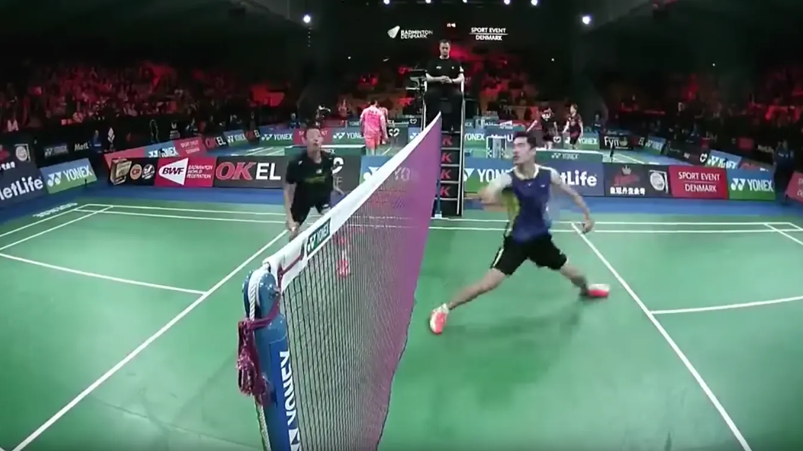
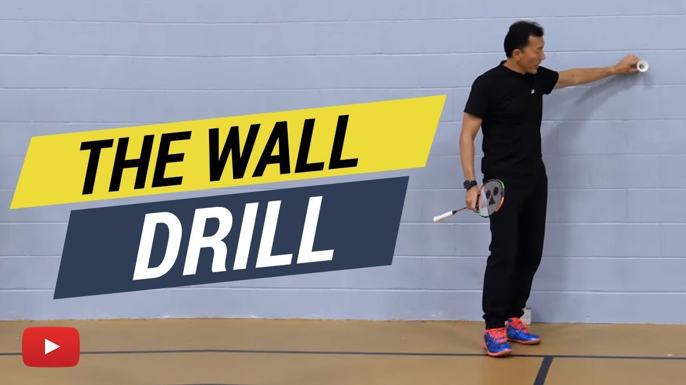

Rally badminton, also known as singles badminton, is a popular sport played between two individuals. Each player stands on opposite sides of a rectangular court divided by a net, and the objective is to hit a shuttlecock over the net and land it on the opponent's side. Players use rackets to hit the shuttlecock, and the game involves a series of rapid back-and-forth exchanges, known as rallies. The winner is the player who wins the best of three sets, with each set being played until one player reaches 21 points.
 More INFOSolo badminton, also known as individual badminton, is a form of badminton where players play alone against a wall or a machine that sends shuttlecocks back to them. This is often used for training purposes, as it helps players to develop their hand-eye coordination, footwork, and overall agility. In solo badminton, players can focus on specific aspects of their game without having to worry about their opponent's tactics or strategy.
 More INFO